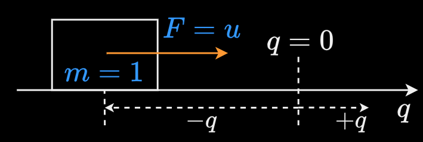

Double Integrator
Setup
[Russ lecture 2009,
Control article]

FBD. Example of a mechanical system would be a brick sliding over frictionless ice.
$q$ is used to denote the kinematics and $x$ is used as the state vector. This is a linear system.
State space form
$$\begin{align*}
\text{State:}\; x &= \begin{bmatrix}q \\\dot{q}\end{bmatrix} \\
\text{Dynamics:}\; \dot{x} &= Ax + Bu \\
&= \begin{bmatrix}0 & 1 \\
0 & 0
\end{bmatrix}x + \begin{bmatrix} 0 \\ 1\end{bmatrix}u \\
\begin{bmatrix}\dot{q} \\\ddot{q}\end{bmatrix} &=
\begin{bmatrix}0 & 1 \\
0 & 0
\end{bmatrix}\begin{bmatrix}q \\\dot{q}\end{bmatrix}
+ \begin{bmatrix} 0 \\ 1\end{bmatrix}u \\
\end{align*}$$
Expanding results in 2 equations:
$$\begin{align*}
\dot{q} &= \dot{q} + 0u \\
\ddot{q} &= u
\end{align*}$$
$F=\ddot{q}$, since $m=1$. $u$ is a scalar force.